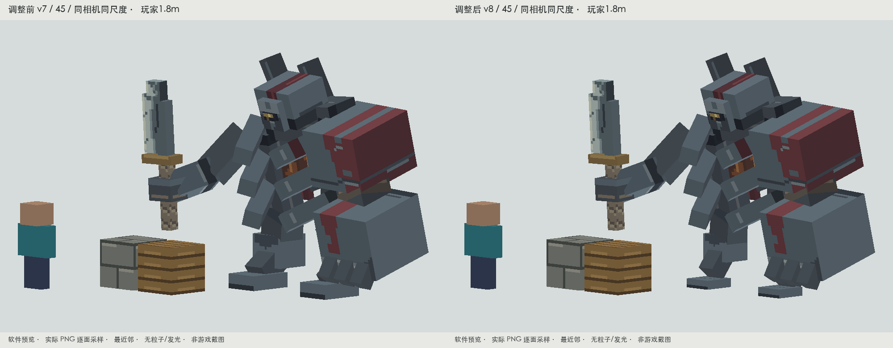
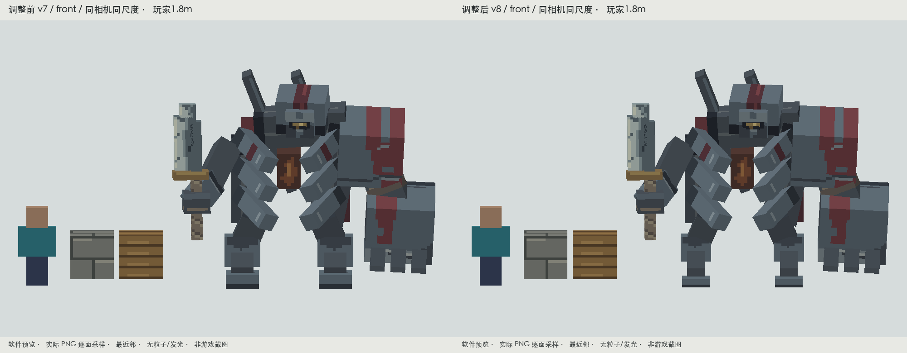
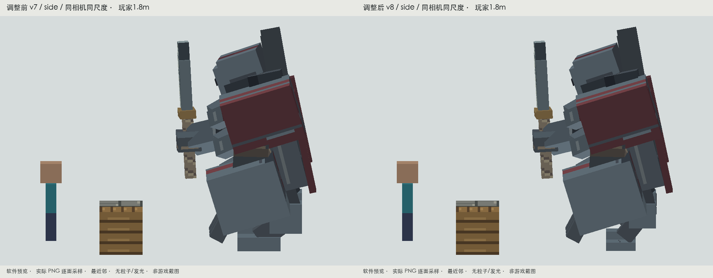
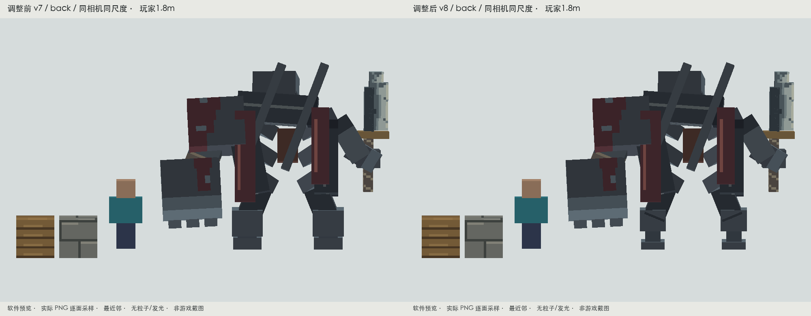
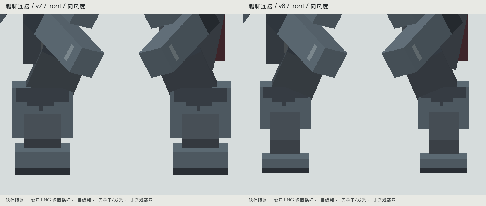
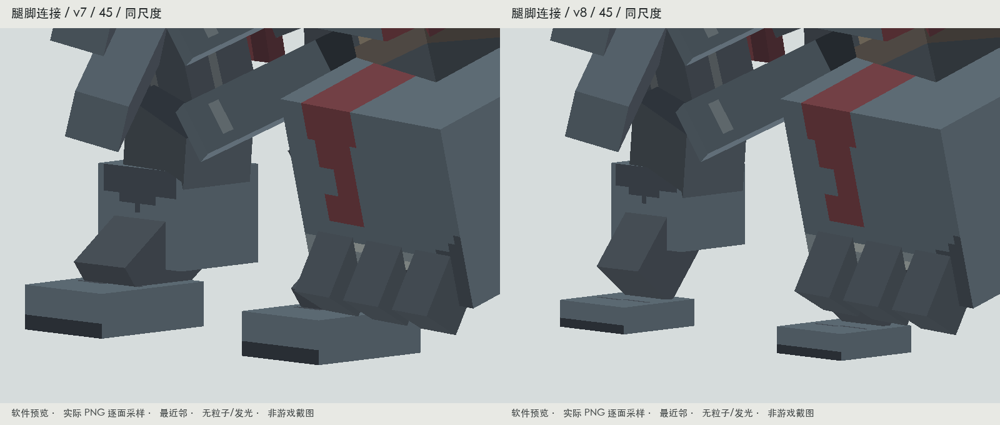
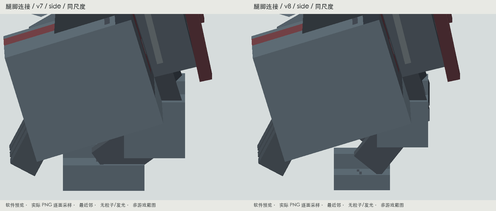
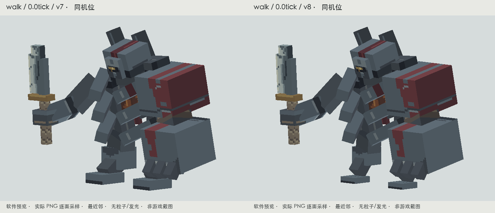
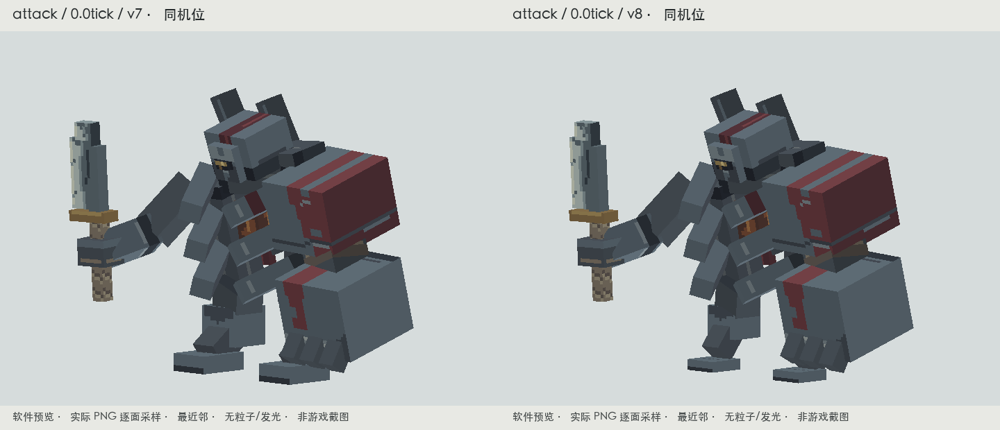

DYNASTY / FORGE 1.20.1 / 兵煞残甲 v8缩脚、减厚，保留巨臂与前压体量
上一版脚掌仍像厚底座，邻接腿甲也偏重。本轮只收紧原有腿脚块体，保留已认可的上躯壳、巨臂、头部、刀与12°前倾姿态。
同相机、同尺度前后对照
左：v7；右：v8。双方使用相同玩家和1米石砖参照，未分别缩放画面。

45° / 软件逐面真实PNG预览
正面 / 软件逐面真实PNG预览
侧面 / 软件逐面真实PNG预览背面与纯黑剪影

背面 / 同尺度| 部位 | 本轮调整 |
|---|
| 上躯壳 | 沿用v7，几何与位置未改 |
| 头盔主体 | 沿用v7，几何与位置未改 |
| 脚掌 | 12×5×16 → 10×3×11（宽×厚×长）；厚度−40%，前后长度−31%，体积−66% |
| 上身重心 | 沿用v7前压12°，未再次变更 |
| 刀 | 全部刀部尺寸、位置、形状、UV与PNG保持v7 |
腿脚近景与完整同机位动作对照

腿甲—脚踝—脚掌 / front / 软件同尺度
腿甲—脚踝—脚掌 / 45 / 软件同尺度
腿甲—脚踝—脚掌 / side / 软件同尺度
完整移动前后对照 / 左v7、右v8 / 软件
完整攻击前后对照 / 左v7、右v8 / 软件真实Minecraft截图
正式实体与Renderer，普通光照，无额外粒子。下列旧/新截图采用同一套测试场景与相机。
45°、背面、移动、蓄势、接触、恢复
六段完整原动作
保留原动作名称、时长、攻击12 tick接触与全部旋转通道。只有死亡动画原有的根骨位移值根据收紧后的支撑重新贴地，时间键未变。下列WebP为完整离线回放，固定镜头。
idle / 4.0秒
全部40帧walk / 2.1秒
全部40帧hurt / 0.45秒
全部40帧attack / 1.2秒
全部40帧cast / 1.5秒
全部40帧death / 0.95秒
全部40帧原色、灰度、UV与玩家观察距离
验证
构建通过；8个实机状态核对当前资源哈希；重复导出字节一致。骨骼名称、父子关系和方块数量保持，未新增Boss。贴图与UV保持v6字节/数据一致，刀的尺寸与局部形状一致。已核对所有非support骨骼数据与v7完全一致。其他角色、碰撞、技能和伤害未改。
自然遭遇与多人战斗未追加测试；cast仍是未绑定具体生产法术的既有资源片段。
结果与实机记录 · 几何、刀与动画检查 · 重复导出检查 · 构建记录